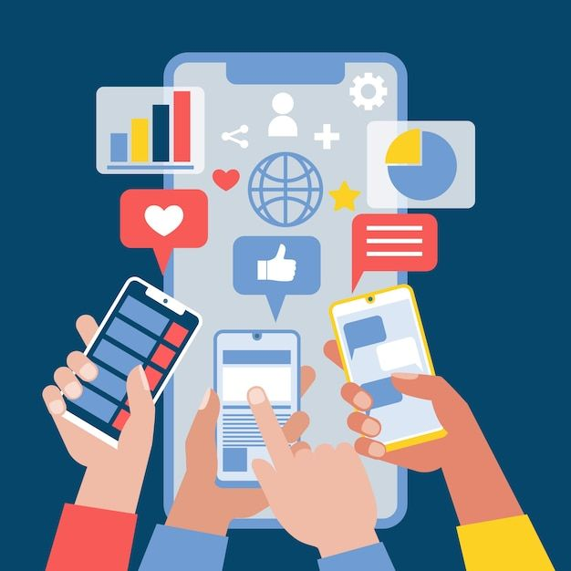

Impacto de las Redes Sociales
El impacto de las redes sociales en la sociedad moderna es inmenso y se manifiesta en múltiples dimensiones: social, cultural, económica, educativa y emocional. Han modificado la forma en que las personas se comunican, aprenden, trabajan y se relacionan.
Las redes sociales permiten que las personas se conecten sin importar la distancia geográfica. Han dado voz a comunidades que antes no eran escuchadas y han facilitado la organización de movimientos sociales y campañas solidarias. Gracias a ellas, causas humanitarias, ambientales o culturales logran visibilidad y apoyo en todo el mundo.
Sin embargo, también han generado efectos negativos, como la pérdida de la interacción presencial, el ciberacoso y la polarización social. El anonimato y la facilidad de expresión en línea pueden dar lugar a comportamientos dañinos. Por eso, la educación digital es fundamental para fomentar una convivencia respetuosa.
Las redes sociales son espacios donde se comparten valores, tradiciones y expresiones culturales. Han permitido la difusión del arte, la música y la literatura, acercando culturas y creando nuevos estilos de comunicación. Al mismo tiempo, influyen en las tendencias y modas, generando una cultura globalizada que puede afectar la identidad local.
El comercio electrónico y la publicidad digital han crecido enormemente gracias a las redes sociales. Las empresas las utilizan para llegar a su público, promover productos y ofrecer servicios. Además, muchos emprendedores encuentran en ellas una oportunidad de negocio y crecimiento económico.
En el ámbito educativo, las redes sociales facilitan la colaboración entre estudiantes y docentes, el acceso a información actualizada y el aprendizaje interactivo. Plataformas como YouTube, Facebook, TikTok o LinkedIn se utilizan para la enseñanza, la capacitación y la creación de comunidades de aprendizaje.
El uso constante de redes sociales puede influir en la autoestima y en la percepción personal. Comparar la propia vida con la de otros puede generar frustración o inseguridad. Por eso, es importante recordar que las redes muestran solo una parte de la realidad y que cada persona debe mantener un equilibrio entre la vida digital y la vida real.
El impacto total de las redes sociales depende del modo en que cada individuo las utilice. Si se manejan con criterio y responsabilidad, pueden ser una fuerza transformadora para la sociedad.
